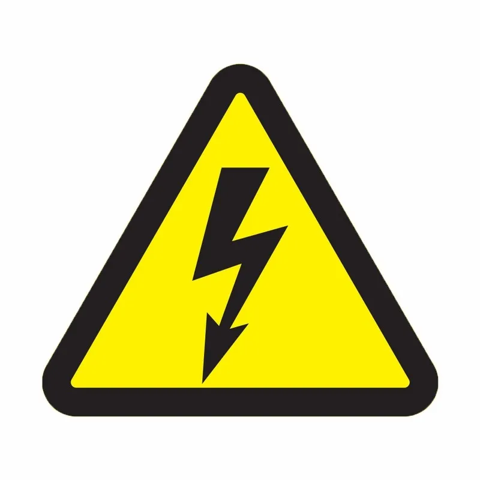
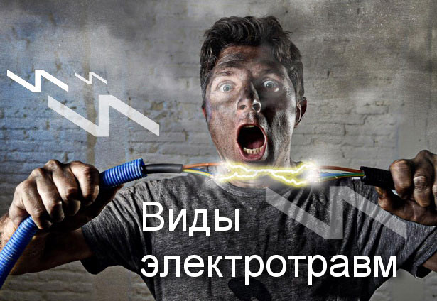
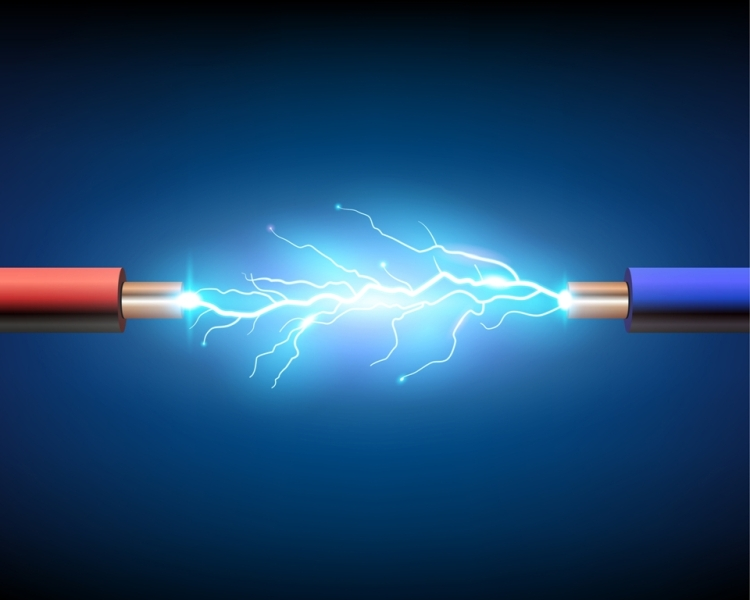

- это система мер (организационных, технических, правовых) для защиты людей от поражения током, электродугой, статического электричества или электромагнитных полей.
— это повреждение тканей и органов, вызванное воздействием электрического тока или электрической дуги.
Электротравмы составляют 1–3% от общего числа травм, но характеризуются высоким уровнем летальности — 10–16% всех смертельных случаев. В России смертность составляет около 8,8 случаев на 1 млн жителей в год. Чаще всего (до 40%) травмы происходят в быту и на производстве в сельском хозяйстве/строительстве.

Электрический ток как поражающий фактор отпределяет степень физтологического воздействия на человека. Чем больше напряжение прикосновения, тем больше поражающий ток.
Поражающие токи по степени физиологического воздействия: 0.8-1.2мА - пороговый ощутимый ток (наименьшее значение тока, которое человек начинает ощущать);
10-16мА - пороговый неотпускающий (приковывающий) ток, когда из-за судорожного сокращения рук человек самостоятельно не может освободиться от токовужущих частей;
100мА - пороговый фибрилляционный ток; он является расчетным поражающим током. Вероятность поражения таким током равна 50% при продолжительности его воздействия не менее 0.5 секунды.
ВАЖНО! Никакое напряжение нельзя признать полностью безопасным.
